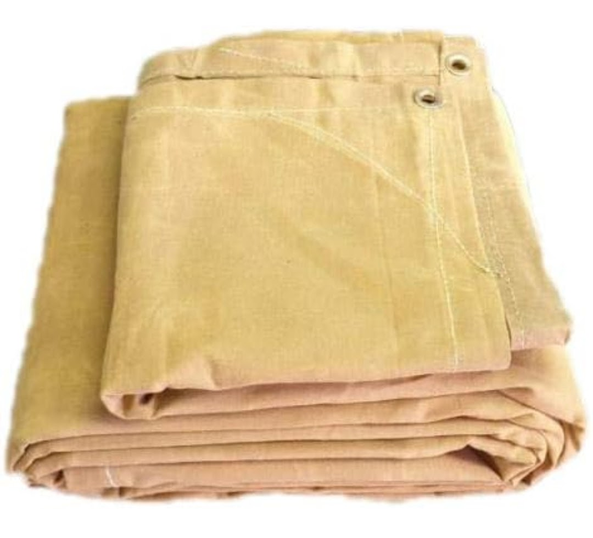
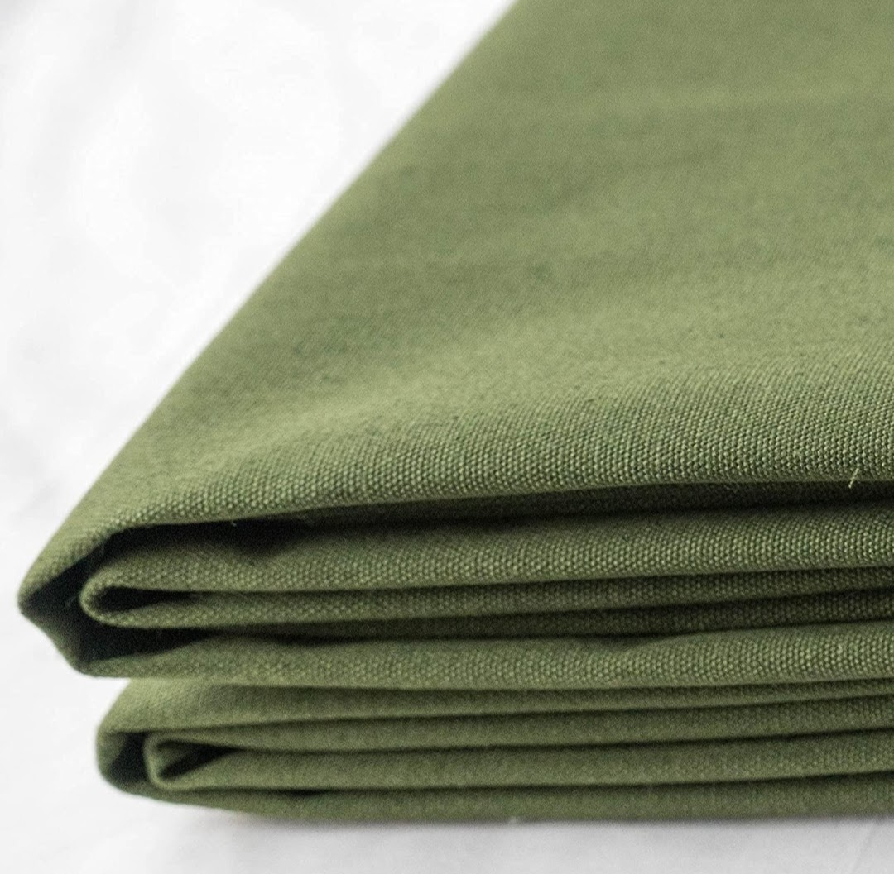
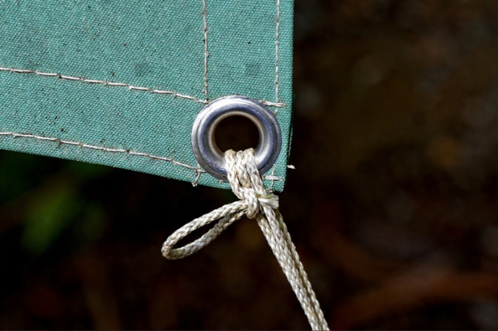
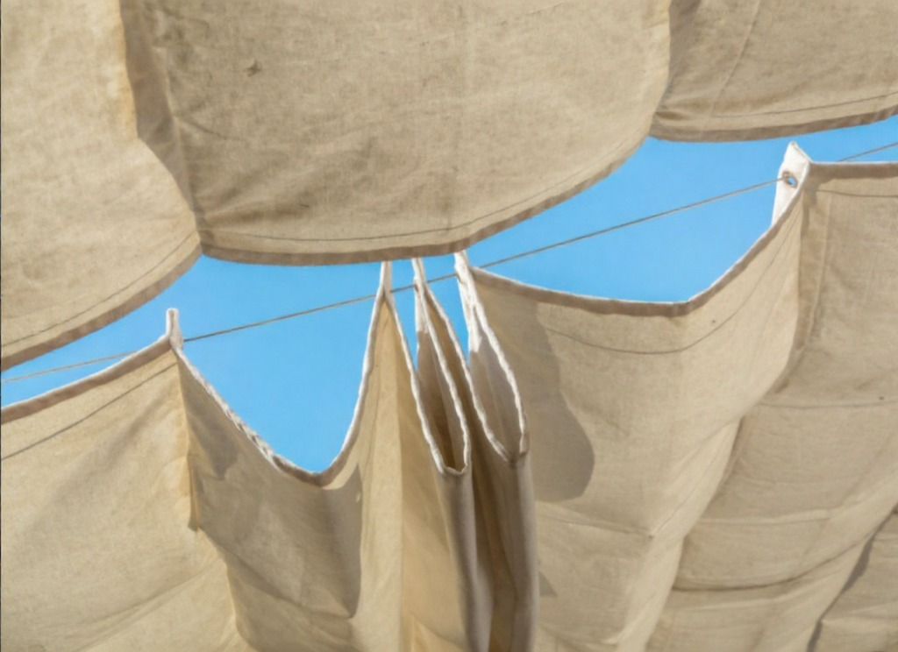
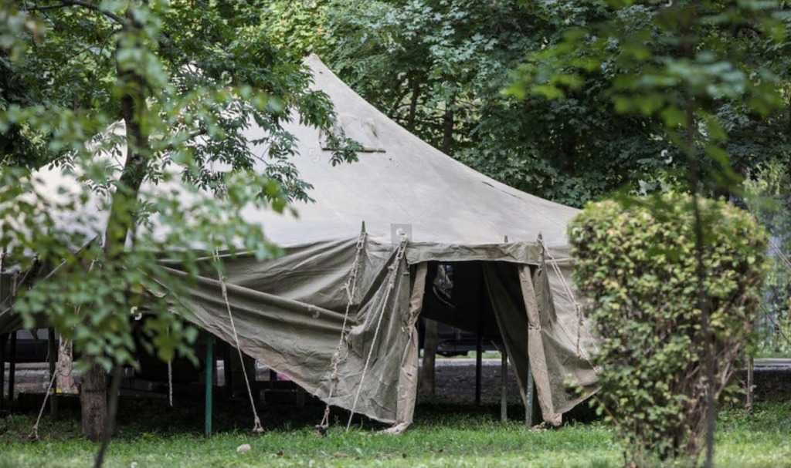
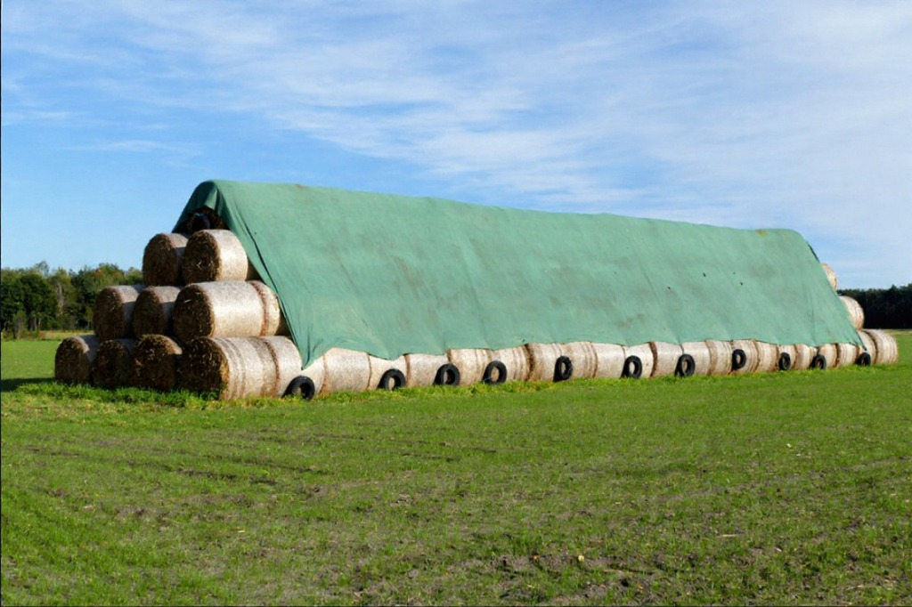

Heavy-duty cotton canvas tarpaulins designed for rugged industrial, transportation, and outdoor protection applications.







Canvas Tarpaulins are manufactured using high-quality cotton fabric and are known for their strength, breathability, and durability. These tarpaulins are widely used where abrasion resistance and long-term rugged performance are required.
Compared to plastic tarpaulins, canvas tarps offer better airflow and heat resistance, making them suitable for covering goods during transportation, storage, and outdoor operations.
For Indian transport conditions, higher GSM canvas is recommended for highway movement and repeated loading. Waxed or treated canvas should be selected where rain exposure is frequent.